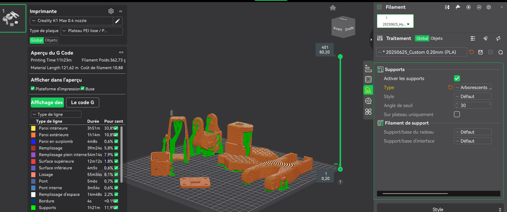
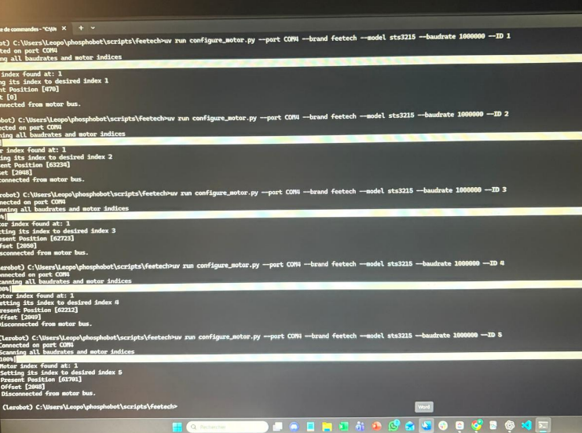

S101-ARM – Robotics Project
Construction and hardware integration of a low-cost, open-source robotic arm designed for AI research and Imitation Learning. The project focuses on building a 'Follower' arm capable of precise teleoperation and data collection for future neural network training.
Additive Manufacturing & Parts Preparation
The mechanical components were fabricated using PLA on a Creality K1 Max (0.4mm nozzle). To ensure the structural integrity required for the robotic joints, I optimized the slicing profile for strength and dimensional accuracy rather than speed. This specific configuration ensures precise bearing fitment and smooth kinematic action without mechanical backlash.
- - Walls: 3-4 perimeters (Max Rigidity)
- - Infill: 25% Gyroid (Omnidirectional strength)
- - Outer Wall Speed: 150 mm/s (Tolerance control)
- - Temp: 220°C Nozzle / 60°C Bed


Actuator Calibration & Bus Configuration
Before mechanical integration, I configured the Feetech STS-series bus servos using the LeRobot Python SDK on an environment. This phase ensures that the physical actuators communicate correctly via the serial bus interface.
- - Servo ID Assignment: Flashed unique IDs (1-6) to allow daisy-chain communication.
- - Baud Rate: Configured to 1Mbps for low-latency data transmission.
- - Zeroing & Alignment: Precise software zeroing to align physical hardware with the digital URDF model.
Mechanical Assembly & Integration
I executed the full electromechanical integration of the 6-axis manipulator (Follower/Leader Configuration). This final stage required assembling the printed components with the calibrated actuators, transforming individual parts into a cohesive kinematic chain.
- 🔹 Kinematic Assembly: Assembled Pitch, Roll, and Gripper mechanisms, integrating bearings to reduce friction to a minimum.
- 🔹 Cable Management: Routed servo cables through hollow structural parts to prevent binding during full Range of Motion (ROM).
- 🔹 Mechanical Validation: Verified passive back-drivability, ensuring the motors can be manually manipulated smoothly for teleoperation tasks.

Next Steps: Teleoperation & AI Training
With the hardware fully validated, I am now transitioning to the software pipeline. The immediate goal is to bridge the gap between physical mechanics and digital intelligence using Imitation Learning techniques.
- - Teleoperation Setup: Configuring the Python environment to control the Follower arm using a game controller or a Leader arm.
- - Data Collection: Recording a dataset of 50+ demonstration episodes (in HDF5 format) for a specific manipulation task.
- - ACT Policy Training: Training an Action Chunking Transformer neural network to clone the behavior and achieve autonomous motion.
- - Hackathon Training: Planning to participate in a robotics hackathon to accelerate the training process and benchmark the robot's performance in real-world competitive scenarios.